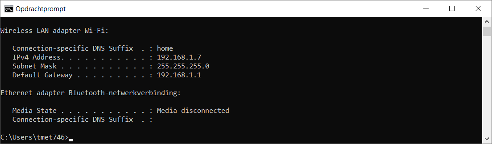
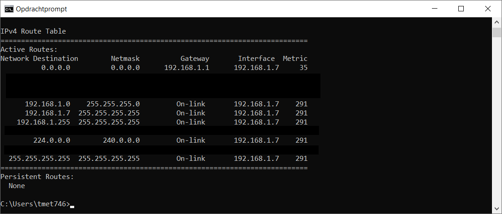
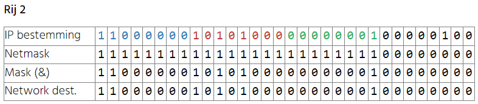
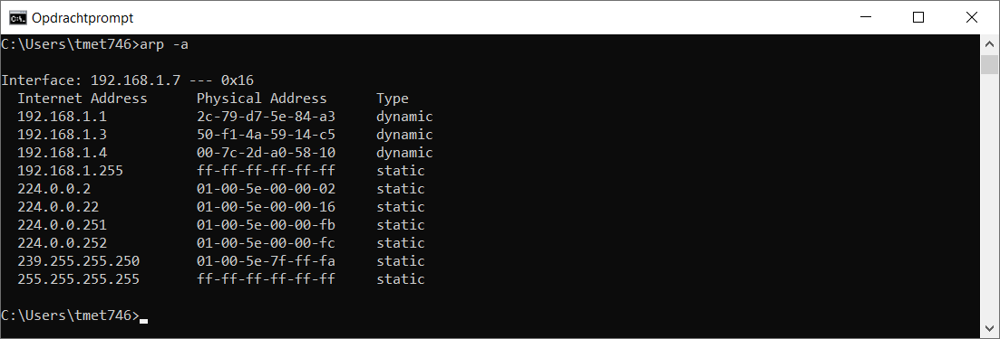
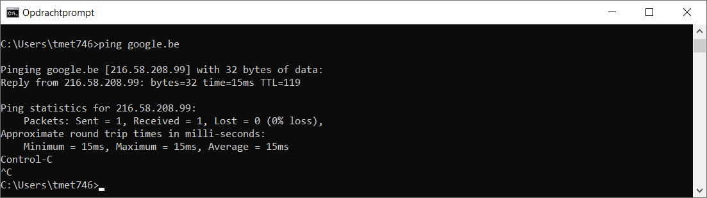
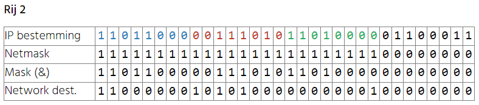
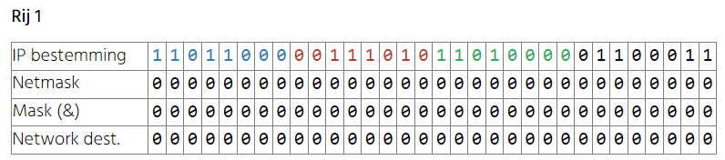

Routing decisions
Je weet dat een switch frames binnen het LAN gaat afleveren op basis van MAC adressen maar hoe doet een router dat met pakketten op basis van IP adressen?
Het antwoord is via routing decisions op basis van een routing table.
Iedere router heeft een routing table en ook jouw computer heeft een routing table. In de routing table van jouw computer staat natuurlijk heel weinig omdat deze maar verbonden is met 1 netwerk. Een router heeft natuurlijk meer informatie in zijn tabel staan.
De routing table van je computer opvragen doe je met het commando route print -4

In de routing table vind je een aantal kolommen terug. Bekijk eerst eens de voorlaatste kolom Interface. In dit geval zie je er twee IP adressen in terugkeren: 192.168.1.7 (het IP adres van de PC zoals gekregen door de DHCP server) en 127.0.0.1.
Met het commando ipconfig kunnen we uitvissen bij welke adapter dit IP adres hoort en dat is, zoals je ziet, de wireless adapter.

Laat ons dus focussen op de rijen met 192.168.1.7 als interface en de rest even buiten beschouwing laten.

Stel nu dat we een pakket moeten afleveren op 192.168.1.4 . De routing table wordt bekeken en zoals je kan zien zit dit adres er niet exact in. Jouw computer weet dus momenteel nog niet op welke netwerkkaart hij best het pakket verder stuurt.
De aandachtige student heeft natuurlijk al door dat er maar 1 netwerkkaart is die een IP adres heeft en het dus sowieso deze netwerkkaart zal worden. Maar dit vergeten we even.
Om dit toch te weten te komen wordt de mask bewerking uitgevoerd. Dit houdt in dat we het IP adres van de bestemming, de network destination en de netmask binair zullen voorstellen. Daarna doen we een binaire AND op de IP bestemming en netmask en dit is het resultaat van de mask bewerking (Mask &).
Laat ons dit eens uitvoeren op de tweede rij van tabel.

Zoals je kan zien is het resultaat van de Mask bewerking (Mask &) en de network destination exact hetzelfde. Dit betekent dat er een match is én het betekent dat interface 192.168.1.7 geschikt is om het pakket met bestemming 192.168.1.4 verder die kant op te sturen.
In de kolom Gateway zie je ook on-link staan. Dit betekent dat 192.168.1.4 bereikbaar is op het lokaal netwerk. En in principe zou nu de lokale ARP tabel geraadpleegd worden om het overeenkomstig MAC adres te vinden en dan is het routing probleem opgelost.

Het is een ander verhaal als we bijvoorbeeld willen een pakket verzenden naar google.be. Als we de hostnaam omzetten naar een IP via DNS bekomen we bijvoorbeeld: 216.58.208.99. Je kan dit thuis makkelijk achterhalen met een ping of nslookup commando. Waarschijnlijk is het IP adres anders als jij dit probeert.

Laat ons nu opnieuw de routing table er bij nemen van de computer met het commando route print -4:

En dan maken we de mask bewerking op rij 2:

Zoals je kan zien is het resultaat van de Mask bewerking (Mask &) en de network destination verschillend. Dit betekent dat er geen match is én het betekent dat interface 192.168.1.7 voorlopig niet geschikt is om het pakket met bestemming 216.58.208.99 verder die kant op te sturen.
Maken we de mask bewerking op rij 1 dan zien we een ander verhaal:

Zoals je kan zien is het resultaat van de Mask bewerking (Mask &) en de network destination exact dezelfde. Dit betekent dat er een match is én het betekent dat interface 192.168.1.7 geschikt is om het pakket met bestemming 216.58.208.99 verder die kant op te sturen.
Dus op rij 2 was de interface 192.168.1.7 niet geschikt en op rij 1 was de interface 192.168.1.7 wel geschikt. Dit betekent dat sowieso 192.168.1.7 kan overwogen worden als kandidaat om het pakket verder naartoe te sturen.
Alle rijen van de routing tabel worden afgelopen en telkens wordt de mask bewerking uitgevoerd. De rijen die matchen worden onthouden. De beste match is de langste match. Als er meerdere matches zijn met dezelfde lengte dan wordt de rij gekozen met de laagste metric.
De metric wordt omschreven als een kost. Die kost kan uitgedrukt worden in tijd of in hop count. In Windows is het niet zo duidelijk hoe die metric precies wordt berekend en welke eenheid er wordt gebruikt. Er wordt vermoedelijk een schatting gemaakt van de snelheid van de interface en zo wordt de metric toegekend. Een hoge snelheid is een lage metric.
Ben je bijvoorbeeld zowel bedraad als draadloos verbonden met hetzelfde netwerk dan is de lengte van de match hetzelfde maar de bedrade verbinding heeft meestal een lagere metric waardoor je netwerkverkeer over de kabel gaat. Je kan zelf de waarde van de metric aanpassen met het route commando maar dit gaat buiten het bereik van deze cursus.